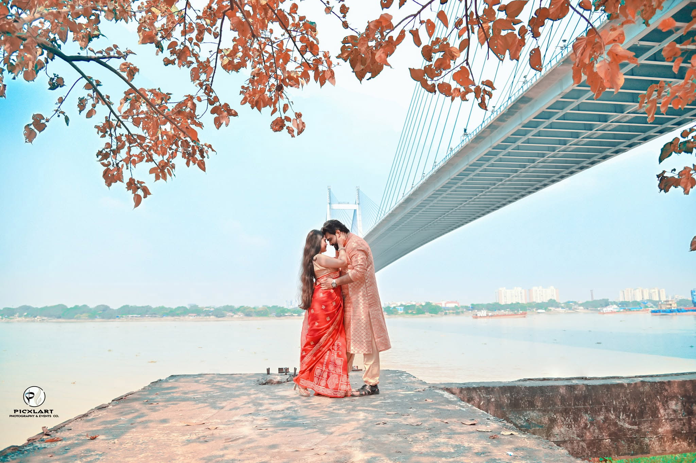
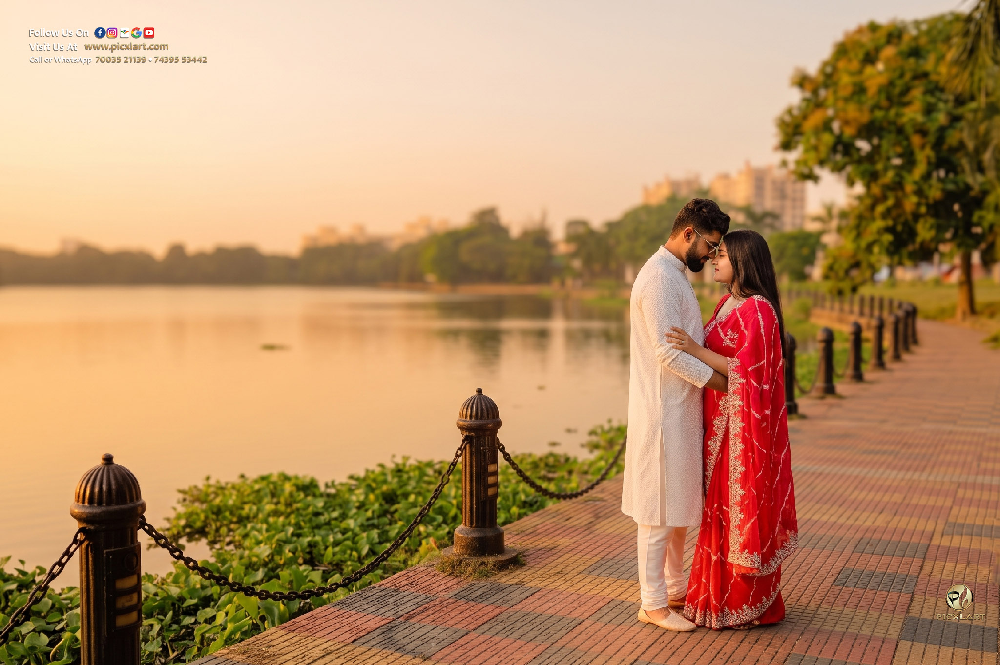
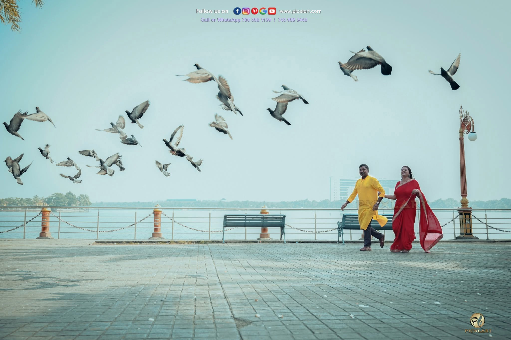
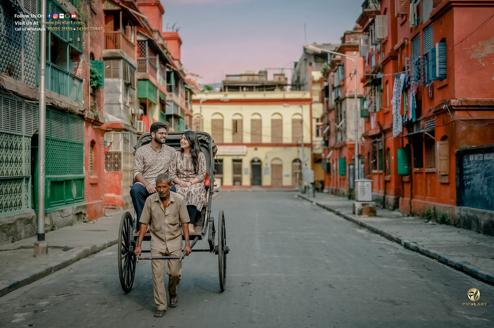
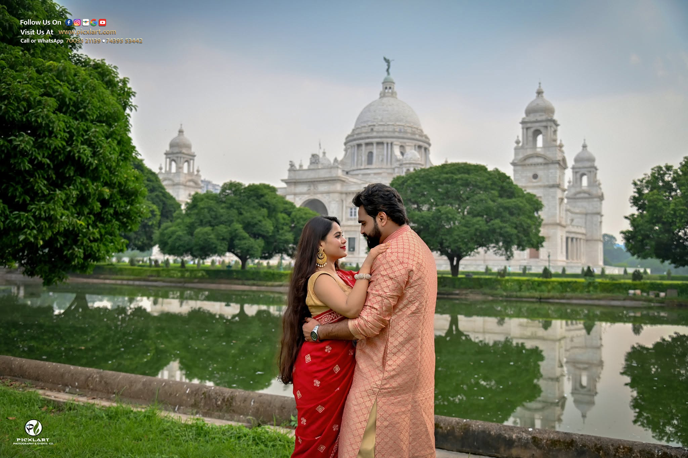
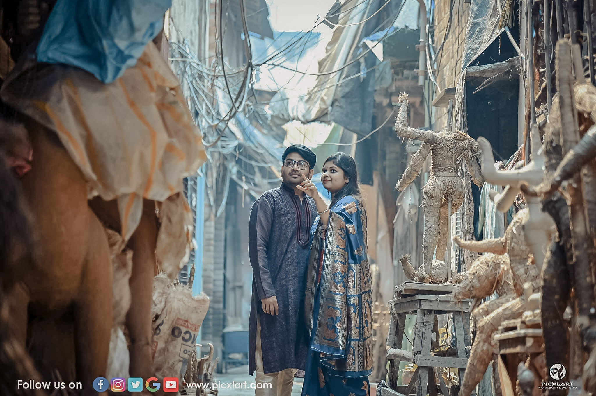
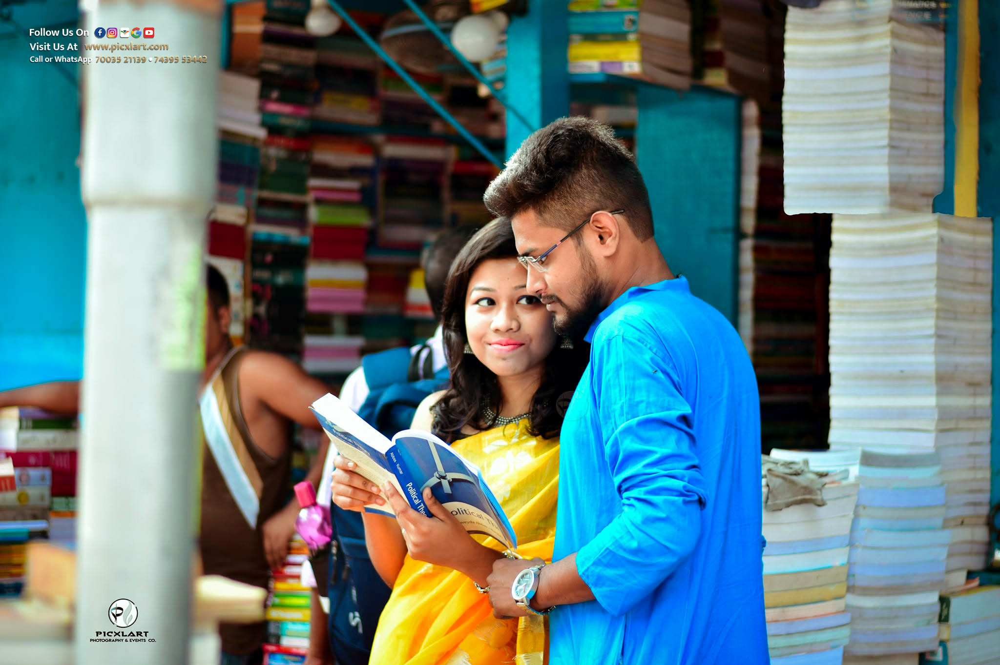

Kolkata, known as the City of Joy, seamlessly weaves timeless heritage with modern elegance. From grand colonial monuments and narrow vintage streets to tranquil lakes, art hubs, and luxury resorts, the city offers an endless palette for couples planning their pre-wedding photoshoot.
Whether you dream of a romantic sunset ride on a traditional wooden boat or a vintage retro tram ride, our team at Picxlart Photography has put together this ultimate guide featuring top pre-wedding photoshoot locations in Kolkata with exact entry permissions, budget insights, and practical photoshoot tips.
Part 1: Iconic Heritage, Riverfronts & Public Landmarks
1. Princep Ghat & River Ganges Free Outdoor Spot
The Corinthian white pillars of Princep Ghat set against the iconic Vidyasagar Setu suspension bridge offer Kolkata's most romantic backdrop. Hiring a traditional wooden boat on the Ganges at sunset unlocks breathtaking golden-hour couple silhouettes.
- Best Timing: Early morning (6:00 AM – 8:00 AM) or Golden Hour Sunset (4:30 PM – 6:00 PM).
- Ideal Outfits: Flowing western gowns, designer sarees, traditional Dhoti-Panjabi.

2. Smaranika Tram Museum Heritage Vibe / Entry Fee
Located near CTC Maidan, this air-conditioned vintage tram car and museum allows couples to capture classic 1970s Calcuttan romance among wooden seats, vintage tickets, and nostalgic interiors.
3. Acharya Jagadish Chandra Bose Botanical Garden Paid Spot
Spanning over 270 acres in Shibpur (Howrah), this botanical paradise offers wide open tree-lined avenues, riverside walks, and the world-famous Great Banyan Tree. Pro Tip: Prior shoot permission is recommended and it is best to avoid holidays due to heavy public crowds.
4. Rabindra Sarobar Lake Free Outdoor Spot
A tranquil artificial lake in South Kolkata surrounded by thick green canopies, side railings along long water bodies, stone-paved walkways, and vintage lamp posts. Offers incredible morning and late-afternoon glow.
- Timing Tip: Best frames come during early morning (6:30 AM - 9:30 AM) and late afternoon (3:30 PM - 5:30 PM). Highly recommended to avoid the midday sun between 10:00 AM to 3:30 PM.

5. Eco Park & Eco Island (New Town) Paid Shoot / Booking Mandatory
Spanning 480 acres, Eco Park is a modern outdoor studio featuring replicas of the Seven Wonders of the World (Eiffel Tower, Taj Mahal, etc.), tea garden landscapes, glass bridges, and lakeside walkways. Requires advance booking permission. Drone photography and aerial frames in the Seven Architecture zone deliver grand royal pre-wedding visuals.

6. Mallick Ghat Flower Market Free Public Place
Nestled beneath Howrah Bridge, Asia's largest wholesale flower market offers thousands of bright yellow marigold garlands and intense street culture for vibrant, artistic documentary-style pre-wedding frames.

7. Bow Barracks Free Public Spot
Tucked behind Bowbazar, these red-brick Anglo-Indian colonial apartments, green window shutters, and narrow brick alleys exude old-world European charm and retro aesthetic.

8. Victoria Memorial Grounds Normal Entry Ticket / Video Special Permission
The imposing white Makrana marble palace, sprawling green lawns, reflection pools, and manicured flowerbeds deliver British-era architectural grandeur. Normal entry tickets allow photo shoots; video instruments require prior special permission from the authority.

9. Kolkata Maidan Free Public Spot
Vast green open meadows with a limitless horizon, grazing horses, colonial-era architecture, and the famous Eden Gardens in the backdrop. Perfect for expressing love in vast open fields with creative Rig Photography setups.
- Speciality: Open vast skies, candid movement setups, and classic Calcuttan touch.
- Best Timing: Early morning mist (6:00 AM - 8:30 AM) and soft golden late afternoon light.

10. South Park Street Cemetery Paid Entry / Permission Required
For couples who appreciate artistic Gothic architecture, moss-covered stone obelisks, towering ancient trees, and dramatic shadowy light play right in Park Street.
Part 2: Cultural Royal Palaces & Literary Nostalgia
11. Jorasanko Thakur Bari Paid Spot / Permission Required
The ancestral mansion of Nobel Laureate Rabindranath Tagore. Featuring classic red-brick verandahs, grand courtyards, and traditional aristocratic Bengali heritage.
12. The Rajbari Bawali Luxury Paid Resort
A beautifully restored 300-year-old zamindari palace located near Budge Budge. Grand brick arches, vintage courtyards, antique furniture, and royal pond-side setups make it Kolkata's top luxury pre-wedding & destination wedding resort.
13. Howrah Bridge (Rabindra Setu) Public / Restricted / Night Shoot
The iconic steel cantilever bridge spanning the Hooghly River. While standing photography on the main bridge walkway is restricted during peak traffic, romantic running-car shots or cinematic late-night shoots yield breathtaking visuals.
14. Indian Museum Grounds Paid Permission Required
The oldest museum in India features grand white Ionic columns, high arched corridors, and quiet inner quadrangles. Photography is permitted within the outer grounds with prior official booking.
15. Marble Palace (North Kolkata) Strict Official Permission
A 19th-century palatial mansion in Chorbagan adorned with Italian marble walls, antique sculptures, Victorian chandeliers, and private manicured gardens. Strict prior permission is required from the estate authority.
Part 3: Artistic Streets, Sacred Spaces & Modern Horizons
16. St. Paul’s Cathedral Free Outdoor Area
An architectural marvel featuring Indo-Gothic spires, stained glass windows, and quiet green surroundings right adjacent to Victoria Memorial. Outdoor grounds offer peaceful and classy frames when dressed appropriately.
17. Kumartuli Free Outdoor Spot / Local Token Fee
The historic potters' neighborhood along the riverbank where artisan sculptors craft clay idols of gods and goddesses. Offers raw, artistic, and culturally rich storytelling frames. Small nominal token fees are sometimes requested by local artisan committees.

18. College Street (Boi Para) Free Public Spot
The world's largest second-hand book market. Stacks of old books, vintage coffee houses, yellow taxis, and historic university buildings create a nostalgic setting for intellectual, book-loving couples looking to wrap their love story in literary charm.

19. Sovabazar Rajbari Paid Spot / Booking Contact
Famous for its magnificent traditional open courtyard (Thakur Dalan), classic colonnades, and royal heritage. Matching regal traditional sarees and dhotis with this aristocratic setting creates lifetime memories. Also available for wedding bookings. Direct Contact: 075959 85168.
20. Nicco Park Paid Ticket / Intimation Required
Ideal for energetic, fun-loving couples wanting joyful candid photos on amusement rides, merry-go-rounds, and colorful lakeside backgrounds. Informing park authorities at the gate yields a smooth experience.
21. Vidyasagar Setu (Second Hooghly Bridge) Public Cable Bridge / Running Car Concept
Offers dramatic modern cable-stayed bridge architecture and panoramic sunset river views across the Kolkata-Howrah skyline. Best captured via running car shoots from a secondary vehicle, as standing on the main bridge deck is restricted.
22. Birla Mandir Free Entry / Spiritual Guidelines
An intricately carved white Rajasthani-style marble temple delivering divine elegance and pure traditional aesthetic. As a sacred site, intimating authorities and maintaining respectful attire/decorum ensures a peaceful session.
23. Belur Math Free Entry / Spiritual Guidelines
Situated on the west bank of Hooghly river, featuring peaceful green lawns, spiritual architecture, and calm riverbank seating. Perfect for subtle, respectful couple portraits. Prior intimation at the administration office is recommended.
24. Chintamoni Kar Bird Sanctuary (Sonarpur) Paid Ticket Spot
Located in the Rajpur Sonarpur area (Nearest rail station: Sonarpur). Open daily from 7:00 AM to 5:00 PM. Ticket fare approx. ₹120–₹150 per head. A lush green canopy forest filled with tall bamboo groves, orchard trails, and quiet forest paths for nature lovers.
25. Calcutta Bungalow (Shyambazar) Paid Heritage Booking
A restored 1920s vintage townhouse with retro Bengali decor, courtyard verandas, antique furniture, and classic 20th-century Calcuttan nostalgia. Shooting requires prior paid permission from management.
Ready to Capture Your Love Story?
At Picxlart, we turn your romantic moments into cinematic visual stories. Based in Hooghly, we serve across Kolkata, West Bengal, and Destination Weddings Pan-India.
BOOK YOUR PRE-WEDDING SHOOT